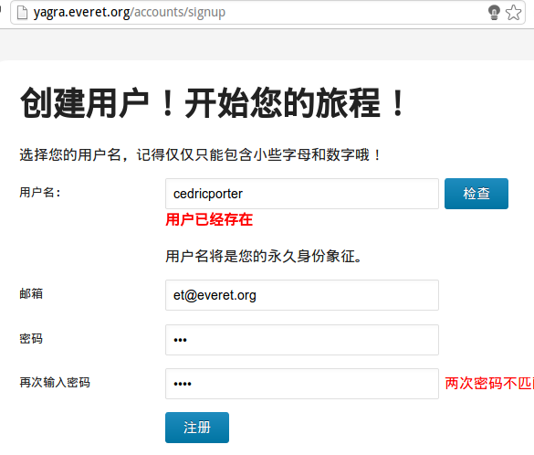

Yagra
Table of Contents
1 源码获取
源码使用了Google Code提供的SVN服务。
访问 https://code.google.com/p/cedricporter-yagra/source/checkout
svn checkout http://cedricporter-yagra.googlecode.com/svn/trunk/ cedricporter-yagra-read-only
2 环境搭建
因为要求Apache，我们就选用Apache，而且Apache对于CGI的支持也是不错的。
2.1 rewrite
对于Apache，我们首先需要打开它的rewrite模块。因为需要Apache将所有的请求全部rewrite到指定处理器后面。详情见下面的配置。
a2enmode rewrite service apache2 restart
2.2 虚拟主机配置
2.2.1 Apache配置
<VirtualHost *:81>
ServerName yagra.everet.org
ServerAdmin et@everet.org
DocumentRoot /var/www/yagra/
ErrorLog /var/log/apache2/yagra_errors.log
CustomLog /var/log/apache2/yagra_accesses.log common
AddHandler cgi-script .py
DirectoryIndex main.py
<Directory /var/www/yagra>
AllowOverride None
Options +ExecCGI -MultiViews +SymLinksIfOwnerMatch
Order allow,deny
Allow from all
<IfModule mod_rewrite.c>
RewriteEngine on
RewriteBase /
RewriteCond %{REQUEST_FILENAME} !-f
RewriteCond %{REQUEST_FILENAME} !-d
RewriteRule ^(.*)$ main.py/$1 [L]
</IfModule>
</Directory>
</VirtualHost>
我们将Apache的监听端口设为81,是因为我的服务器的前端Web Server为Nginx，监听80。所以通过Nginx将80端口的请求转发到Apache。
2.2.2 Nginx配置
server {
server_name yagra.everet.org;
client_max_body_size 2M;
location / {
proxy_pass http://127.0.0.1:81;
}
}
对于Nginx的配置仅需要转发就好了。
2.3 数据库创建
我在scheme.sql里面编写好了创建数据库，创建表以及新建用户授予权限的sql了。
所以需要一个有权限的用户来运行scheme.sql来为yagra创建数据库。
mysql -u root -p < scheme.sql
2.4 上传图片文件夹权限设置
请在当前站点根目录创建一个文件夹*uploads*，并且授予CGI脚本运行用户对uploads文件夹有可读可写的权限。
3 yagra功能介绍
3.1 注册
url: /accounts/signup
对于yagra的注册，需要用户名、邮箱以及密码。用户名和邮箱都不能与之前用户重复。在选择用户名的时候，可以点击检查来检查用户名是否合法。
除此之外，在点击注册按钮的时候，会向服务器检查所有的输入是否合法，只有都合法的时候才会提交表单，以免页面跳转导致用户需要重新输入。

3.2 用户头像管理页面
3.3 头像api
头像访问api通过email的md5计算出来的url进行获取。
avatar_url = "http://yagra.everet.org/avatar/" + hashlib.md5(email.lower())
对于头像api的访问，有进行缓存优化。
除了基本的设置300秒的缓存，让浏览器5分钟内不要再请求服务器外，还有利用ETag防止不必要的数据传输。
Cache-Control: max-age=300
ETag的计算是直接使用图像文件名的sha1，因为在保存图像的时候，就让每一幅图像拥有一个唯一的文件名。这样计算ETag的速度会比计算整张图像内容要快得多。
4 yagra的设计
由于作业要求，yagra仅仅使用了Python标准库以及MySQLdb这个附加库。
yagra的运行方式为CGI。
4.1 url处理
yagra的对于url处理的策略是url rewrite到一个处理文件main.py，这样可以保证url的美观。而且可以通过分配器将不同url通过正则表达式分派给不同的请求处理器。这样的代码结构会更加易于理解和维护。
4.2 html生成
因为不能第三方库，也就不能使用模板引擎，如果直接通过字符串拼接生成html，这样是十分的低效。
于是我借鉴了lisp中html生成的方式，写了一个微型的模板引擎，这样我就可以方便地写html了。
def homepage(button_name, button_url): body_html = flatten((h2("欢迎来到Yagra"), p("Yagra是一个全球头像系统，可以为您的邮箱绑定一个头像。"), p("如果您还没有Yagra账号，那就赶紧注册一个吧！", strong(a(k(href="/accounts/signup"), "点击注册"))), h3("头像访问API"), p("你只需要在yagra注册一个账号，就可以通过邮箱md5访问你的头像"), code('avatar_url = ' '"http://yagra.everet.org/avatar/" ' '+ hashlib.md5(email.lower())'), h3("个人主页"), p("除此之外，您还将拥有一个个人主页哦！地址为"), code("http://yagra.everet.org/username"), p(), p("如我们", a(k(href="/rose"), "rose的个人主页")), )) html_string = Template.basic_frame(body_html, button_name=button_name, button_url=button_url) return html_string
上面是我的首页的html的代码生成，直接通过html标签的同名函数来编写。而这些繁琐的函数是怎么生成的呢？
这里我使用了Python的黑魔法exec。于是整个模板引擎的代码如下所示，非常的短就创建了许多函数。详见"everet/template.py"
t = Template(""" def $tag(kwargs=dict(), *args): prefix = "<$tag " if isinstance(kwargs, dict): for k, v in kwargs.iteritems(): prefix += '%s="%s" ' % (utf8(k), utf8(str(v))) else: args = (kwargs, ) + args prefix += ">" string = prefix + utf8_join_flatten(args) + "</$tag>" return string """) for tag in ["html", "head", "body", "title", "script", "form", "input", "div", "img", "p", "strong", "br", "ul", "li", "dd", "dt", "dl", "a", "meta", "link", "span", "label", "code", ] + ["h%d" % i for i in xrange(6)]: func = t.substitute(tag=tag) exec(func)
4.3 选择头像
为了防止csrf，用户切换头像的请求都需要csrf_token。
4.4 数据库设计
数据库的设计请见scheme.sql这个文件，主要分为用户表，图片表、头像表和session表。
里面创建了数据库yagra以及用户yagra并为yagra授予必要的权限。